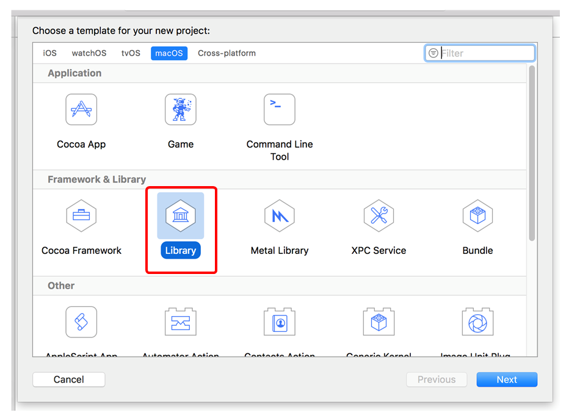
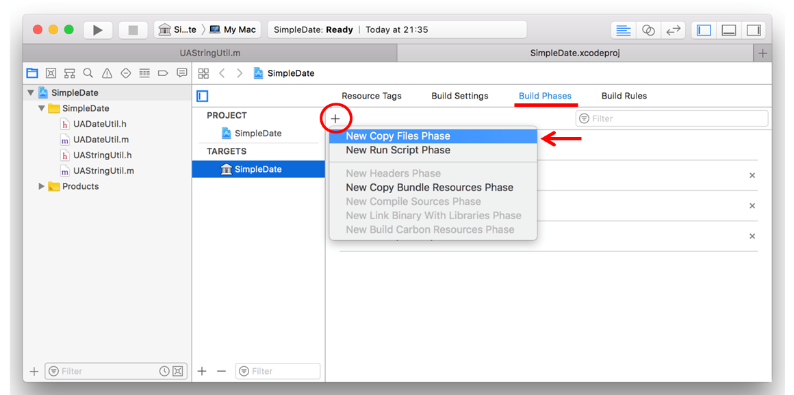
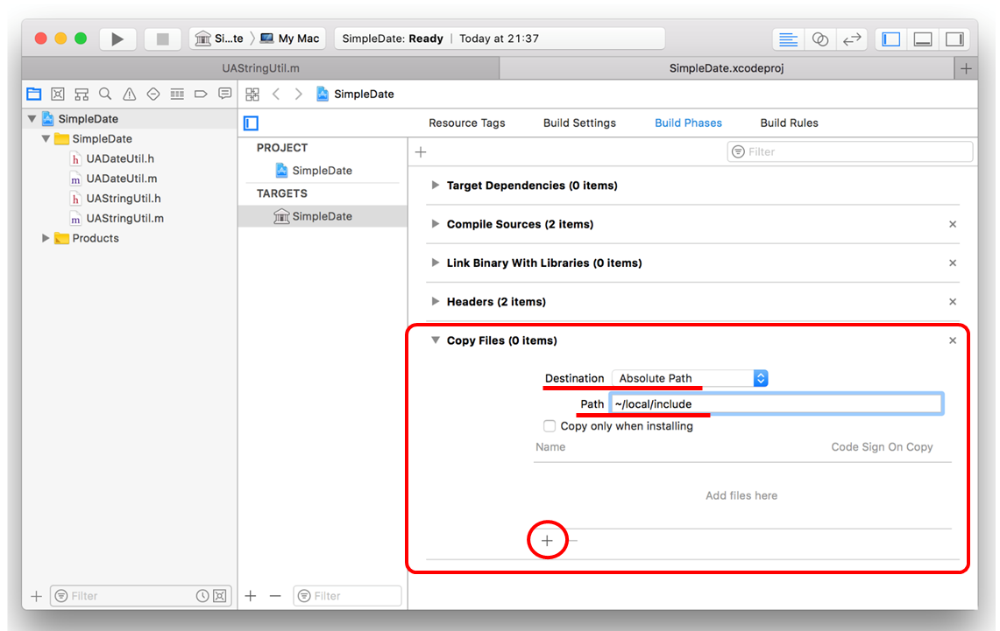
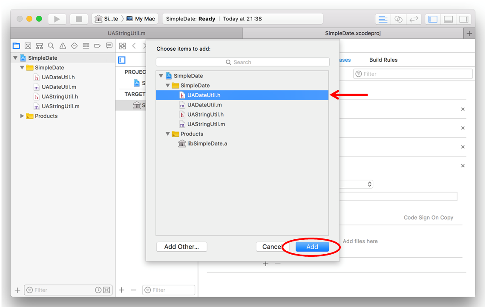
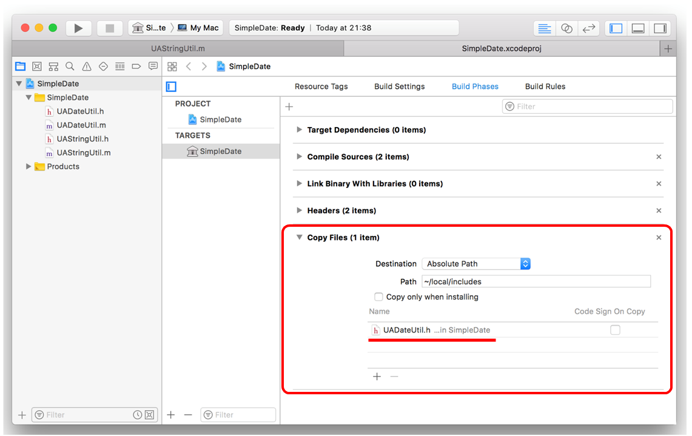
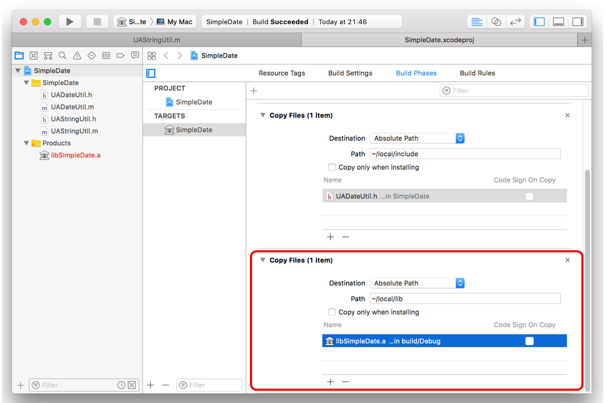
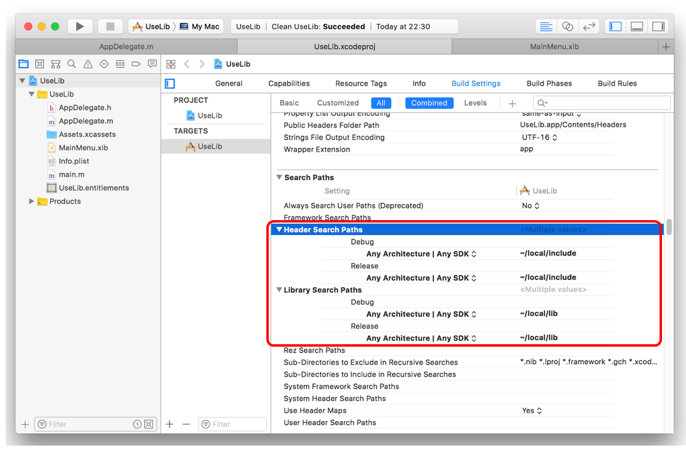
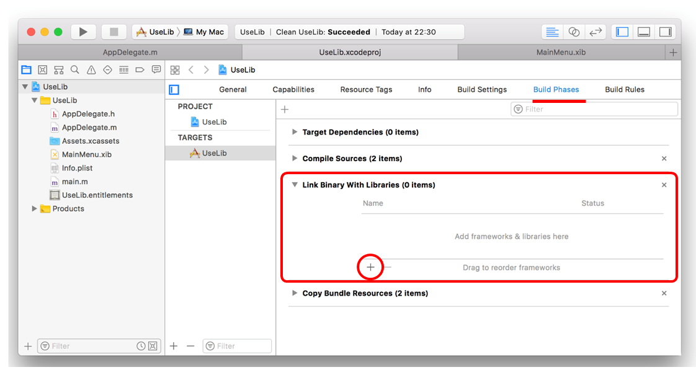
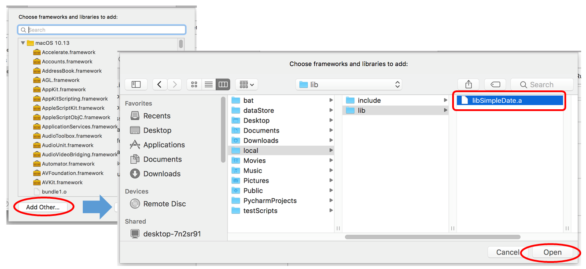
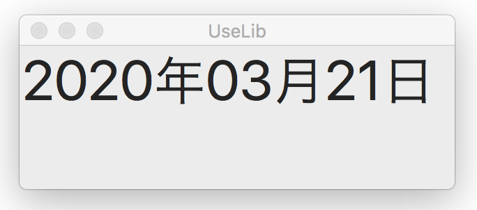

Static Libraryを作成する
Static（静的）なライブラリは、アプリケーションのビルド時にライブラリオブジェクトを取りみリンクするもの。
ライブラリに含めることができるのは（当たり前だが）プログラムコードから作成されたオブジェクトのみ。一方、Frameworkを利用すれば、リソースを含めたバンドルとして提供できるので、こちらの方が使い道はありそう。（別途紹介予定）
ライブラリ作成の手順
プロジェクトを作成する
プロジェクトの種類は『Libray』、Typeは『Static』を選ぶ。例題のプロジェクトの名前は『SimpleDate』とした。

クラスを作成する
テストのための簡単な機能として、NSDateクラスをラップしたクラスを作成し、当日日付を属性付き文字列として返すインスタンス・メソッドを実装する。引数にフォントサイズを指定する。
このクラスは NSAttributedStringクラスをラップしたクラスを所有する。
ライブラリを格納するディレクトリを決める
ライブラリを利用する側からすると、関連するファイルを参照するときに、ライブラリを作成したプロジェクトのパス名に依存していたのでは不都合である。ヘッダファイルとライブラリのオブジェクトは特定の場所にあることが望ましい。
Build Phases の設定により、特定のファイルをビルドを実行するたびに、指定のフォルダに出力することができる。ここでは、ホームディレクトリの下に下記のフォルダを作成し、"ibclude" にヘッダファイル、"lib" にオブジェクトファイルを出力することにする。
ビルドの設定を行う
ビルドのTARGETを選び Build Phasesタブを開き、左上の追加ボタン（＋）をクリックするとメニューが現れるので "New Copy Files Phase" を選ぶ。

ファイルコピーの設定フォームが現れるので、まず出力先のディレクトリを入力する。パスの指定は絶対パス（Absolute Path）を選ぶ。そのあと下の追加ボタン（＋）をクリックする。

Finder形式のパネルが現れるので、出力するファイルを選択し、Addボタンで追加する。

設定が完了すると次のような画面になる。

ヘッダファイルの出力の設定と同じ手順で、オブジェクトファイルの設定を行う。画面の左上の追加ボタン（＋）のクリックから繰り返す。

ビルドを実行する
以上の設定の後ビルドを行うと、ヘッダファイルとライブラリのオブジェクトファイルが出力先のフォルダに出力されている。オブジェクトファイル名は、プロジェクト名の頭に "lib" を付けたものになる、
ライブラリを利用する
アプリケーション用のプロジェクトを作成する
Build Serrings で、ヘッダファイルの参照先のパス、リンクするオブジェクトの参照先パスを指定する。パスにはライブラリ作成時に決めたディレクトリを指定する。

ビルドの設定を行う
Build Phases で、リンクするオブジェクトファイル名を指定する。（*1）
この設定により、ビルド実行時にリンクオブジェクトが実際に取り込まれる。
Build Phasesタブの Link Binary With Liblaries 入力フォームを開き、下にあるの追加ボタン（＋）をクリックする。

システム提供のライブラリ一覧が表示されるので、Add Other...をクリックし オープンパネルを表示する。所定のディレクトリを開いてオブジェクトファイルを指定しOpenボタンをクリックする。

（*1）プロジェクトナビゲータのAdd Files によりオブジェクトファイルをプロジェクトに取り込んでも同じである。なお、Copy ItemsをNOにして元のファイルを参照しないと、ファイルの更新と同期が取れなくなるので注意せよ。
アプリケーションプログラムの実装
ライブラリをインクルードしたアプリケーションプログラムを作成する。
ヘッダファイルをインポートすることでクラスが可視となり、コンパイルが通る。変数名の補完もサポートされる。（ただし#Import のファイル名だけは補完してくれない）
実行結果
ライブラリの開発・評価の方法
一般的には、最初のステップで、アプリケーションプロジェクトを作成し、ライブラリとする予定のクラスを組み込んだアプリケーションを開発し評価を行う。
次に、ライブラリプロジェクトを作成し、アプリケーションライブラリから、ライブラリとする部分のクラスだけをそこに移行し、オブジェクトをビルドする。作成されたライブラリオブジェクトが他のアプリケーションから利用可能となる。
アプリケーションプロジェクトからクラスを抜き出すのが手作業で非常に面倒だ。ライブラリプロジェクトの中だけで、開発・評価を一貫して行えないものか？ Workspaceを使えないか？